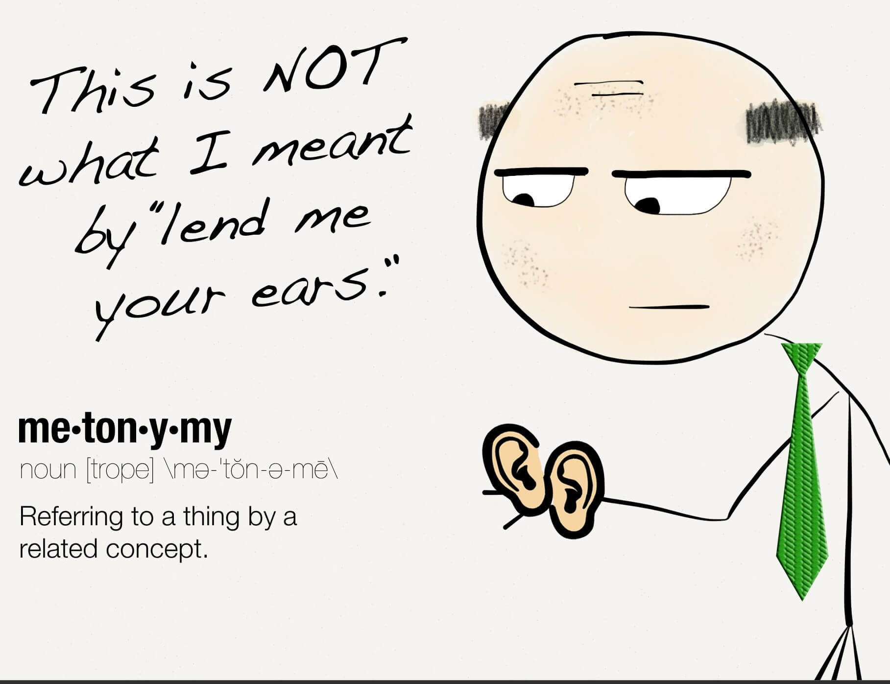

chapter1.6--handout
Background Information
Banns of marriage(结婚启事)
原文：Of course I knew what they were referring to, but I wasn’t even vaguely engaged. The fact that gossip had published the banns was one of the reasons I had come East.
我当然知道他们指的是什么事，但是我压根儿没有订婚。流言蜚语传播说我订了婚，这正是我之所以到东部来的一个原因。
banns是banns of marriage（结婚启事）的简称。bann也可以写作ban, 这个词来自中世纪的英语，表示proclamation. 发布结婚启事的传统源于基督宗教。一般由教区教堂发出公开告示，目的在于向外公布该所教堂在未来举行的婚礼（the public announcement in a Christian parish church of a upcoming marriage between two specified persons）.
其实这个传统还有一个重要意义，就是让教区里的每个人都能知晓这桩婚事后，如果发现当中有违反教义的，大家还可以依教规行使自己的合法阻止劝，提出反对俩人结为夫妇。（The purpose of banns is to enable anyone to raise any canonical or civil legal impediment to the marriage, so as to prevent marriages that are invalid. ）结婚启事较常见于英国圣公会和其他类似的基督教宗派，罗马天主教教会则于1983年废除结婚启事。
我们的民国时期也有这样的订婚和结婚登报的传统，这在当时甚至成为一种时髦，接受过西式教育思想开明、家境富裕、人脉广的人家一般会选择这种方式。除了名媛淑女达官贵人缔结良缘时刊登广告，也有朋友亲人们刊登贺词祝贺的，话都是吉利的白头到老等等，显得又庄重又新派。
这里The fact that gossip had published the banns并不一定真的指流言贴上了教堂的告示，我们可以理解成一种比喻的说法，也就是指谣言传得到处都是，人尽皆知。
Libel(诽谤)
Nick对关于自己已经订婚的谣言的回应是："It’s libel. I’m too poor."（“这是诽谤，我太穷了。”）
如果把某事定义为libel其实就是非常重的说法了，说明事态很严重，不只是gossip（小道传闻）或是rumor（谣言）这么简单。libel专指书面的诽谤/中伤（written defamation），而口头的诽谤/中伤（spoken defamation）就是slander.
这里之所以是libel就是因为that gossip had published the banns, 不据实的传闻上了结婚启事。
Vocabulary
waver
💧vi. 摇摆；踌躇（to not make a decision because you have doubts）
💧原文：The silhouette of a moving cat wavered across the moonlight, and turning my head to watch it, I saw that I was not alone...
一只猫的侧影在月光中慢慢地移动，我掉过头去看它的时候，发觉我不是一个人……
💧waver本义是指“摇晃，摇摆”，在这里形容猫蹒跚着步子的样子（tottering）. waver还可以引申为“踌躇，犹豫不决”，waver between...and/or..., 比如：She's wavering between buying a house in the city and/or moving away. 而waver即指“摇摆不定的人”。
💧waver和hesitate的区别在于：waver表示不知道应该选择怎么做（面对多个选项时），而hesitate则是“犹豫，停顿”，指不知道该不该去付诸行动。
creep
💧vi. 爬行，匍匐（to crawl）
n. 讨厌鬼，谄媚者（someone who tries to make you like them or do things for them by being insincerely nice to you）
💧原文：It sort of crept up on us and first thing you know ——
它不知不觉就进入了我们的话题，你还没注意到哩……
💧creep本义是“（昆虫，汽车）缓慢爬行，匍匐”或者“（人）蹑手蹑脚地移动”，比如：Johann would creep into the gallery to listen to the singers.
约翰会悄悄溜进楼座去听歌手唱歌。
💧这里creep引申为抽象义，sth creep up on sb表示“观点渐渐变强（被某个观点吸引，愈加认同）”，这里Daisy表示的意思是：（关于日耳曼民族的）话题不知不觉就把我们吸引住了……
💧有一首经典的英伦摇滚歌曲就叫做Creep, 这里creep作名词表示“讨厌的人；奴颜婢膝的人”。
Crush Your Problems
- I knew now / why her face was familiar — / its pleasing contemptuous expression / had looked out at me / from many rotogravure pictures of the sporting life / at Asheville and Hot Springs and Palm Beach.
我现在才明白为什么她的面孔很眼熟——她带着那可爱的傲慢的表情曾经从报道阿希维尔、温泉和棕榈海滩的体育生活的许多报刊照片上注视着我。
💧知识拓展
its pleasing contemptuous expression, 一个人的表情如何既“讨人喜欢”又“满是轻蔑”？其实这里的pleasing和contemptuous属于矛盾修辞法（Oxymoron），通过词义的对比来达到出其不意但又引人入胜的效果。虽然Baker看起来十分傲慢，但从中又透露着可爱和吸引力。 - “But we heard it,” insisted Daisy, surprising me by opening up again in a flower-like way. “We heard it from three people, so it must be true.”
“可是我们听说了。”黛西坚持说，使我感到惊讶的是她又像花朵一样绽开了。“我们听三个人说过，所以一定是真的。”
💧表达精讲
open up in flower-like way 从字面理解是“像花朵一样绽开”，这里其实包含了比喻含义，open up表示“毫无顾忌地谈话”（to say exactly what one thinks or feels），比如：
Lorna found that people were willing to open up to her.
洛娜发现人们愿意向她敞开心扉畅谈。
*所以这里是指Daisy说话时的漫无顾忌和肆无忌惮。 - Their interest rather touched me / and made them less remotely rich / — nevertheless, I was confused / and a little disgusted / as I drove away.
他们对我的关心倒很使我感动，也使他们不显得那么有钱与高不可攀了。虽然如此，在我开车回家的路上，我感到迷惑不解，还有点厌恶。
💧表达精讲
①interest 并不是指“兴趣”，否则很难理解Nick为什么会感动，正确的理解应该是“关心”，也就是concern (a feeling that accompanies or causes special attention to sb or sth) .
②made them less remotely rich 也就是 made them appear to be rich in a less remote way. remotely 相当于distantly, 令人感觉疏远地、高不可攀地。 - Something was making him nibble at the edge of stale ideas / as if his sturdy physical egotism / no longer nourished his peremptory heart.
不知什么东西使他从陈腐的学说里摄取精神食粮，仿佛他那壮硕的体格的唯我主义已经不再能滋养他那颗唯我独尊的心了。
💧表达精讲
nibble 在这里极具讽刺效果，它的本义是“啃咬，一点一点地吃”（to eat small amounts of food by taking very small bites），所以nibble at the edge of表示从边上开始啃咬。
想象一个人在吃一块很美味的蛋糕的时候，小心翼翼地从边上一点点的舔食；这里用来形容Tom尽看一些陈腐的东西，还“津津有味地咀嚼”（the edge of是比喻的手法，因为stale ideas本身是抽象名词）。 - The wind had blown off, / leaving a loud, bright night, / with wings beating in the trees / and a persistent organ sound / as the full bellows of the earth / blew the frogs full of life.
风已经停了，眼前是一片嘈杂、明亮的夜景，有鸟雀在树上拍翅膀的声音，还有大地的风箱使青蛙鼓足了气力发出的连续不断的风琴声。
💧句式拆解
①with结构在这里表示伴随，wings beating in the trees和a persistent organ sound是并列成分；
②as引导原因状语从句，解释“风琴声”从哪而来。
💧知识拓展
①这个句子里包含了两个比喻：一是 wings beating in the trees, wings在这里表示“鸟雀”，用部分代指整体（wings是birds身体的一部分），我们叫作Synecdoche (提喻）。
第二个是 a persistent organ sound, 这里并不是真的指风琴声，而是把蛙鸣比作风琴声，因为没有出现like, as之类的比喻词，所以我们把它叫作Metaphor（暗喻）。
②as从句中，the full bellows of the earth “大地的风箱 ”，blew the frogs full of life “让青蛙使劲地鸣叫”；full of life指“充满活力的”，作为形容短语修饰the frogs, 即后置定语。
所以 a persistent organ sound as the full bellows of the earth blew the frogs full of life 可以理解为“大地上的一个个风箱鼓吹着青蛙发出连绵不绝的风琴般的鸣叫”。 - ...fifty feet away / a figure had emerged from the shadow of my neighbor’s mansion / and was standing with his hands in his pockets / regarding the silver pepper of the stars.
五十英尺之外一个人已经从我邻居的宅邸的阴影里走了出来，现在两手插在口袋里站在那里仰望银白的星光。
💧表达精讲
①emerge from... 从…中浮现出来；
②regarding the silver pepper of the star 是现在分词短语作伴随状语，regard在这里表示“注视，打量”；the silver pepper of the stars包含了一个Metaphor（暗喻），也就是the stars that look like the silver pepper, 星星像银色的胡椒粉一样洒满了天空。 - Something in his leisurely movements / and the secure position of his feet upon the lawn / suggested that it was Mr. Gatsby himself, / come out to determine / what share was his of our local heavens.
从他那悠闲的动作和他那两脚稳踏在草坪上的姿态可以看出他就是盖茨比先生本人，出来确定一下我们本地的天空哪一片是属于他的。
💧表达精讲
to determine what share was his of our local heavens, share表示“某人应当拥有的一份”，heavens相当于sky.
*虽然字面上表达的是Gatsby想要确定并宣示哪一片天空是属于他的，但实际象征着他通过各种手段获取财富想要跻身于上流社会，而且是为了得到，甚至可以说是“拿回”（to reclaim）他觉得原本属于他的——Daisy.
Content Analysis
💧Clue 1: Jordan Baker is quite the opposite of Daisy as she plays golf professionally and dates around.
Jordan和Daisy在小说中以闺蜜的关系同时出现，俩人从少女时期就已经成为朋友（"Our white girlhood was passed together there."）但却分别发展出了两条截然不同的人生轨迹。Daisy已经成立家室并且有了女儿，而Jordan则成为了专业的高尔夫球手，并且也没有丝毫要安定下来的意思。
Evidence 1:“Jordan’s going to play in the tournament to-morrow,” explained Daisy, “over at Westchester.”
"乔丹明天要去参加锦标赛，"黛西解释道，"在威斯彻斯特那边。"
Jordan还在不断参加锦标赛，并且会为了训练而忌口不喝酒（“No, thanks,” said Miss Baker to the four cocktails just in from the pantry, “I’m absolutely in training.” —Chapter 1.3）
Evidence 2:“She’s a nice girl,” said Tom after a moment. “They oughtn’t to let her run around the country this way.”
"她是个好女孩，"过了一会儿汤姆说，"他们不应当让她这样到处乱跑。"
Tom说这句话有两层含义，首先是对Jordan打高尔夫球到处参加比赛表示不满；另一层含义则是暗指她的感情生活过于轻浮，也许甚至有不检点。
那么为什么Jordan和Daisy两个角色的对比在书中至关重要呢？在20世纪初，尽管女性权利的状况稍有好转（比如在1919年女性有了选举权），但在家庭方面，女性依然面对着婚姻和生育的压力，尤其在富有阶层。（Most women, especially wealthy women, were expected to marry, have children, and stay at home.）
Daisy可以说是非常循规蹈矩了，而Jordan则更接近现代女性——有自己的事业，爱情和婚姻观也相对自由独立。（Daisy is a traditionalist while Jordan is expanding the possibilities of a woman’s life.）从Tom在言语上的讽刺也可以感受出男性对女性价值的贬低，比如在得知Jordan正在受训准备参加比赛的时候，Tom说了这么一句："How you ever get anything done is beyond me." (Chapter 1.3) “我真不明白你怎么可以做成什么事情。”
💧Clue 2: Daisy had no real intention of making changes about her life (or more precisely, her marriage).
Daisy不仅连说话的声音极具诱惑性，她的言行举止同样让人有捉摸不透的感觉。比如Nick写道自己在跟Daisy进行了一番"heart-to-heart talk"之后却感觉她说的话里充满了虚伪。（I felt the basic insincerity of what she had said.—Chapter 1.5）
比如她抱怨上层生活的空虚无趣，甚至有某些可怕的地方，但她又转而自嘲自己的“愤世嫉俗”，让人感觉很矛盾。这种冲突在今天的一个细节里也得到了印证——
Evidence 1:It seemed to me that the thing for Daisy to do was to rush out of the house, child in arms — but apparently there were no such intentions in her head.
我觉得，黛西应该做的事是抱着孩子跑出这座房子——可是显然她头脑里丝毫没有这种打算。
Nick觉得Daisy应该直接抱着女儿冲出这间屋子，但Daisy本人却依然过得安心舒适。她虽然不满于现状，但也从未想过彻底的改变。这一点也为之后Daisy和Gatsby的重遇埋下了悲剧的伏笔。
Today's Bonus
💧Figures of speech in English 英语中常见的修辞手法
在前面5天的内容里，我们已经通过Fitzegerald的写作认识了不少修辞手法。除了增强语言的技巧性，这些修辞手法的使用也帮助突出了主旨和中心，那么今天的彩蛋老师会再做一个总结和补充~
- Simile 明喻
明喻非常直观，一般有明显的标志词：like, as. 比如：
...an enormous couch on which two young women were buoyed up as though upon an anchored balloon. (Chapter 1.3)
一张庞大的长沙发椅上面有两个年轻的女人，活像浮在一个停泊在地面的大气球上。
- Metaphor 隐喻
隐喻在这本书里出现的频率非常高，这种比喻手法一般不能直接看出来。一个小技巧是翻译成中文，如果要加上“像，仿佛”才能通顺的话就说明是隐喻啦~ 比如：
...the two young women ballooned slowly to the floor. (Chapter 1.3)
两位少妇也都（像气球一样）慢慢地降落地面。
- Synecdoche 提喻
提喻可以是部分代指整体，今天内容中的with wings beating in the trees就是这种情况（wings代指birds），其他例子还有：All hands on deck.
所有的水手都在甲板上了。（hands是sailors身体的一部分）
也可以是整体代指部分，比如America代指The United States of America.
- Metonymy 借喻
借喻中的本体和喻体常常是两个事物，但有着密切和本质的联系。
常见于用地名表示某个机构和行业，比如Downing Street代指“英国政府”，而Wall Street可以表示“美国金融界”，Hollywood指“美国电影业”。
或者是用工具名称来代指某项活动，比如：The pen is mightier than the sword. 文章胜武力。
 - Oxymoron 矛盾修辞
矛盾修辞是用两种不相调和，甚至截然相反的词语来形容一件事物，起到一种强烈的修辞效果，使得所表达的语义更强烈。在文学中使用非常多，比如：
在莎士比亚的《罗密欧与朱丽叶》里，用到了beautiful tyrant (美丽的暴君), fiend angelical (善良的恶魔), damned saint (万恶的善人), onorable villain (神圣的恶棍) 等等。
这种修辞手法在日常用语中其实也存在哦~比如open secret (公开的秘密), wear...inside out (里外反穿)。